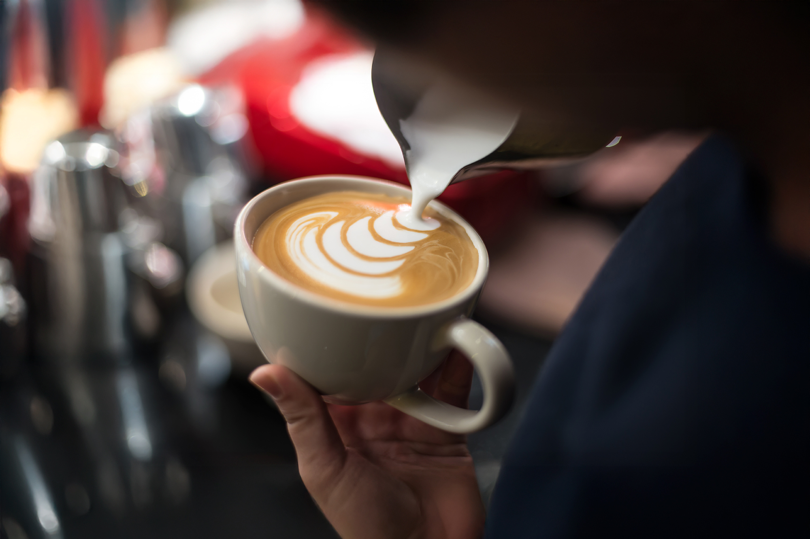

Café caliente o helado, como a vos te gusta
Entendemos el sentimiento: no hay nada como una buena taza de café. Caliente, en días lluviosos y fríos; helado cuando hace calor y el cuerpo lo pide. Sin perder calidad ni enfoque, nos especializamos en el café en todas sus formas, brindando la mejor atención y la bebida tal como a vos te gusta.
